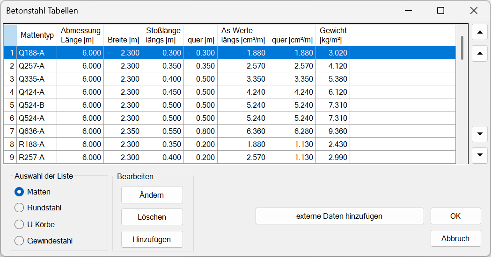
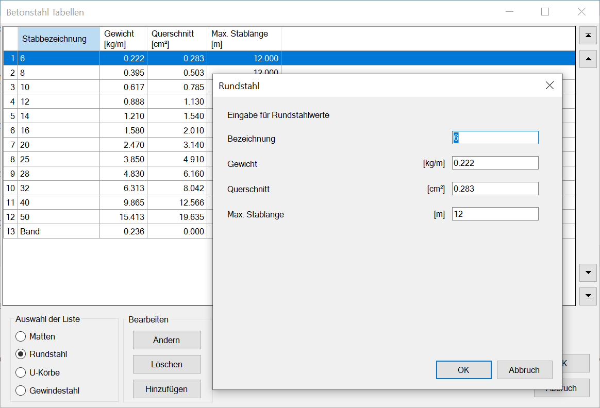
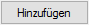
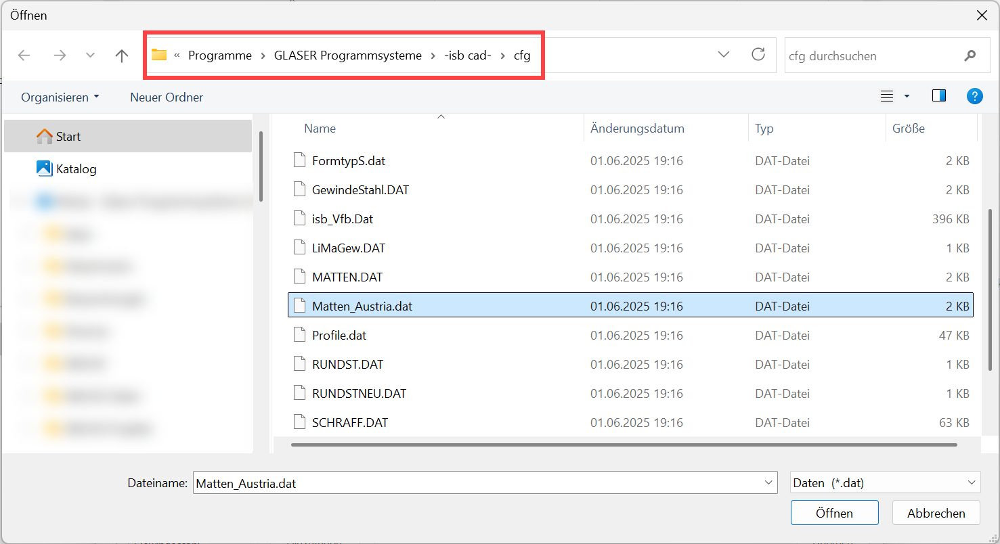
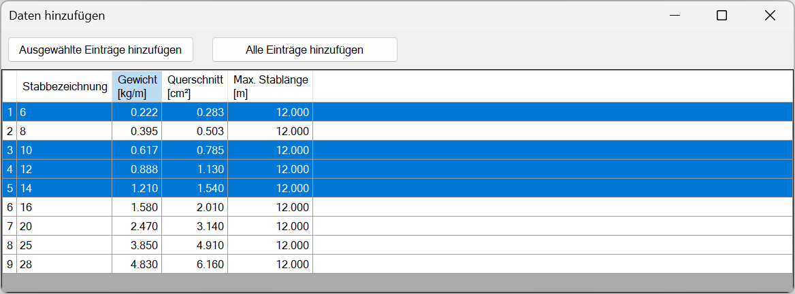

Windows-Startmenü → Programmgruppe ISBCAD 2026 → Hauptmenü → Betonstahl Tabellen.
Verwaltung der in ISBCAD verfügbaren Stahlelemente (Matten, Rundstähle, U-Körbe, Gewindestähle). Öffnet den Dialog Betonstahl Tabellen.
·Die Tabelle enthält eine Auflistung der Bewehrungselemente, die in der Liste enthalten sind, die unter Auswahl der Liste eingestellt ist. Die Listeneinträge können bearbeitet werden, es können neue Einträge angelegt oder Einträge durch Einlesen einer DAT-Datei hinzugefügt werden.
·Die vorgenommenen Änderungen werden in separaten Konfigurationsdateien im aktiven Profil gespeichert.
|
Hinweis: |
|
Die in den Tabellen angegebenen Werte, z. B. die Übergreifungslängen von Matten oder die Gewichte der Unterstützungskörbe sind einschlägigen Tabellen entnommen. Regional kann es bei den Herstellerwerken zu abweichenden Angaben kommen. |

Optionen im Dialog "Betonstahl Tabellen"
 |
Auswahl der Liste
Auswahl der Stahlliste, die in der Tabelle angezeigt und/oder bearbeitet werden soll.
Mattenliste
Zeigt die in ISBCAD verfügbaren Mattentypen an.
Rundstahlliste
Zeigt die in ISBCAD verfügbaren Rundstähle (Stäbe) an.
U-Korbliste
Zeigt die in ISBCAD verfügbaren U-Körbe an.
Gewindestahl
Zeigt die in ISBCAD verfügbaren Gewindestähle an.
Sortieren der Tabelle
Einzelne Tabellenzeile |
·Halten Sie auf einer Tabellenzelle die linke Maustaste gedrückt, und ziehen Sie den Inhalt nach oben oder unten. Eine schwarze Linie zeigt Ihnen an, an welche Position die Zeile verschoben wird. ·Lassen Sie die Maustaste an der Position los, an die der Inhalt verschoben werden soll. |
Mehrere Tabellenzeilen |
·Um benachbarte Tabellenzeilen im Block auszuwählen: -Halten Sie die Umschalttaste gedrückt und klicken Sie die erste Zelle an. Klicken Sie anschließend die zweite Zelle an, um den Tabellenbereich zwischen den angeklickten Zellen auszuwählen. -Lassen Sie die Umschalttaste los. Die Zeilen bleiben markiert. ·Um nicht benachbarte Tabellenzeilen auszuwählen: -Halten Sie die Strg-Taste gedrückt, und wählen Sie die Makrotexte nacheinander aus. -Lassen Sie die Strg-Taste los. Die Zeilen bleiben markiert. ·Um die Tabellenzeilen zu verschieben: -Klicken Sie eine markierte Zelle an und halten Sie die linke Maustaste gedrückt. Ziehen Sie die Inhalte nach oben oder unten. Eine schwarze Linie zeigt Ihnen an, an welche Position die Zeilen verschoben werden. -Lassen Sie die Maustaste an der Position los, an die die Inhalte verschoben werden sollen. |
Bearbeiten
Bearbeitung der aktuell gewählten Liste.
|
Hinweise: |
|
·Verwenden Sie bei der Eingabe von Werten keine Leerzeichen. ·Als Dezimaltrennzeichen muss ein Punkt verwendet werden. |
Ändern des markierten Listeneintrages. Öffnet den Änderungsdialog für die aktuelle Liste mit den Werten des in der Tabelle markierten Eintrages. Der Änderungsdialog kann auch durch Doppelklick in der Tabelle aufgeschlagen werden.
Die Werte können in den Eingabefeldern des Änderungsdialoges überschrieben und mit OK in die Tabelle übernommen werden.
 |

Löscht die markierten Einträge ohne Rückfrage.
|
Achtung: |
|
Wenn Sie den Betonstahl-Tabellen-Dialog mit OK schließen und somit die Änderungen bestätigen, werden die gelöschten Einträge endgültig aus der entsprechenden Listen-Datei gelöscht. Um versehentlich gelöschte Einträge wiederherzustellen, klicken Sie auf Abbruch. Es wird ein Dialog zum Speichern der Änderungen geöffnet. Klicken Sie auf Nein (Änderungen nicht speichern). Der Dialog wird geschlossen und die Änderungen an der gewählten Liste verworfen. Endgültig gelöschte Einträge können als neuer Eintrag wieder zur Liste hinzugefügt werden. Dafür müssen die entsprechenden Werte bekannt sein. |

Einzelauswahl |
·Klicken Sie einen Listeneintrag an. |
Mehrfachauswahl |
·Um benachbarte Listeneinträge im Block auszuwählen: -Halten Sie die Umschalttaste gedrückt und klicken Sie die erste Zelle an. Klicken Sie anschließend die zweite Zelle an, um den Tabellenbereich zwischen den angeklickten Zellen auszuwählen. -Lassen Sie die Umschalttaste los. ·Um nicht benachbarte Listeneinträge auszuwählen: -Halten Sie die Strg-Taste gedrückt und wählen Sie die Listeneinträge aus. -Lassen Sie die Strg-Taste los. ·Um alle Listeneinträge auszuwählen, drücken Sie die Tastenkombination Strg+A. |

Hinzufügen eines Listeneintrags. Öffnet den Eingabedialog für die aktuell gewählte Liste.
Die Vorgabewerte entsprechen dem aktuell gewählten Eintrag und können überschrieben werden. Bei der Bezeichnung (Stabdurchmesser) dürfen keine Leerzeichen verwendet werden! Geben Sie als Dezimaltrennzeichen „Punkt“ ein. Nach Bestätigung mit OK wird der neue Eintrag in der Tabelle angezeigt. Bei der Auswahl eines Durchmessers, z. B. bei der Flächenbewehrung, werden Ihnen die in der Tabelle angezeigten Durchmesser zur Auswahl angeboten.
Um die hinzugefügten Einträge endgültig in die Konfigurationsdatei zu übernehmen, muss der Dialog mit OK bestätigt werden. Wenn Sie auf Abbruch klicken, werden die hinzugefügten Einträge nicht gespeichert.
Übernahme von Werten aus anderen Konfigurationsdateien (*.DAT). Dies beschränkt sich auf folgende Listen: MATTEN.DAT, RUNDST.DAT, UKORB.DAT und GewindeStahl.DAT.
|
Tipp: |
|
Sie können Ihre Mattenliste erweitern, indem Sie eine der folgenden Dateien einlesen: ·Matten_Austria.dat: Enthält Standardmatten für Österreich wie A/AQ-Mattentypen. ·MATTEN.DAT: Enthält eine Auswahl hochduktiler Mattentypen wie Q188-B, R257-B und B335-B. Die Mattendateien befinden sich im ISBCAD-Installationsverzeichnis im Unterordner cfg: ·C:\Programme\GLASER Programmsysteme\-isb cad-\cfg  Beachten Sie: Die Daten in den Betonstahltabellen sind profilabhängig. Sollen sie in mehreren Profilen zur Verfügung stehen, müssen sie mit dem jeweiligen aktiven Profil eingelesen werden. |

Daten hinzufügen
§Öffnen Sie die Konfigurationsdatei (*.DAT), aus der Sie einen oder mehrere Einträge übernehmen wollen.
§Wählen Sie im Dialog, welche Listenelemente zur aktuellen Liste hinzugefügt werden sollen. Nutzen Sie hierfür die Einzel- oder Mehrfachauswahl (s. oben).
In der Tabelle werden nur die Listenelemente angezeigt, die noch nicht in der aktuellen Liste enthalten sind.
 |
Ausgewählte Einträge hinzufügen |
Fügt den in der Liste gewählten Eintrag zur aktuellen Liste hinzu. Um das Hinzufügen einzelner Listenelemente zu beenden, schließen Sie den Dialog, indem Sie das X oben rechts anklicken. |
Alle Einträge hinzufügen |
Fügt alle in der Liste angezeigten Einträge zur aktuellen Liste hinzu und schließt den Dialog. |
§Bestätigen die Änderungen anschließend mit OK.
Siehe auch: